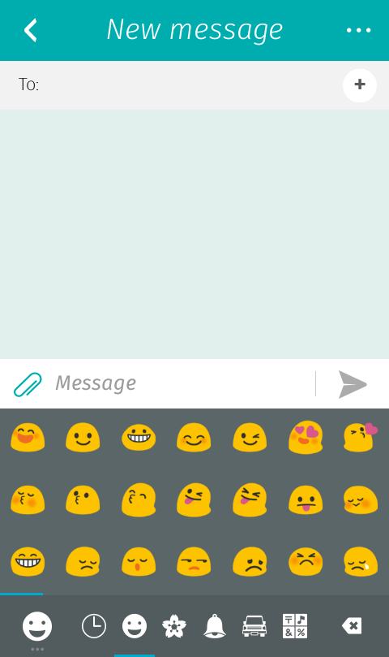
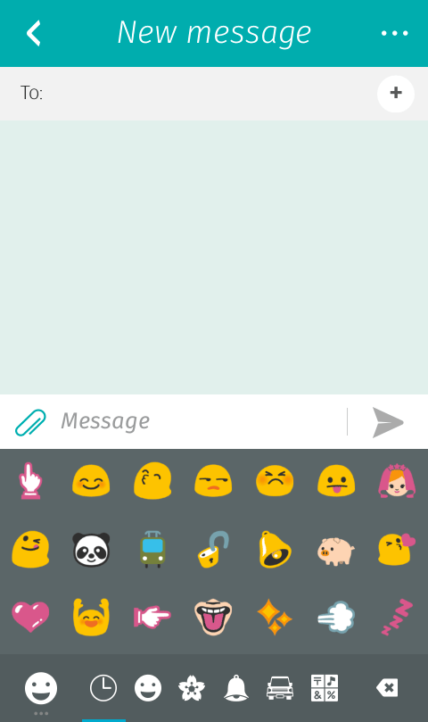
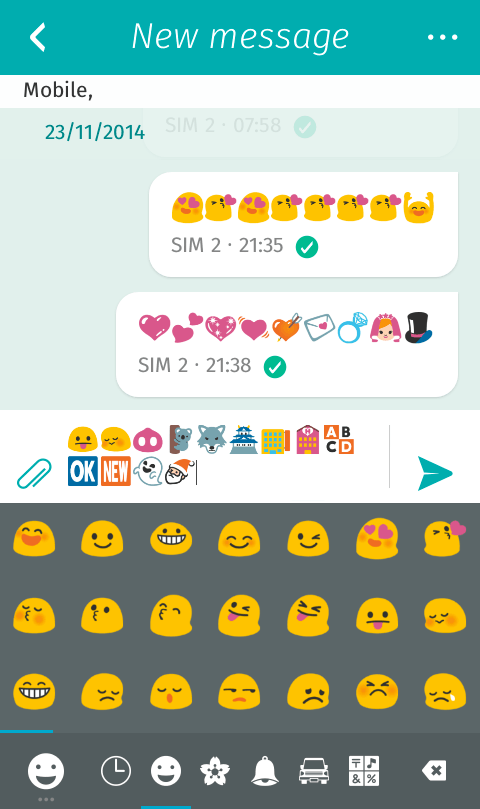
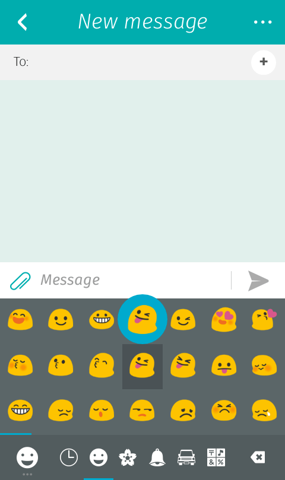
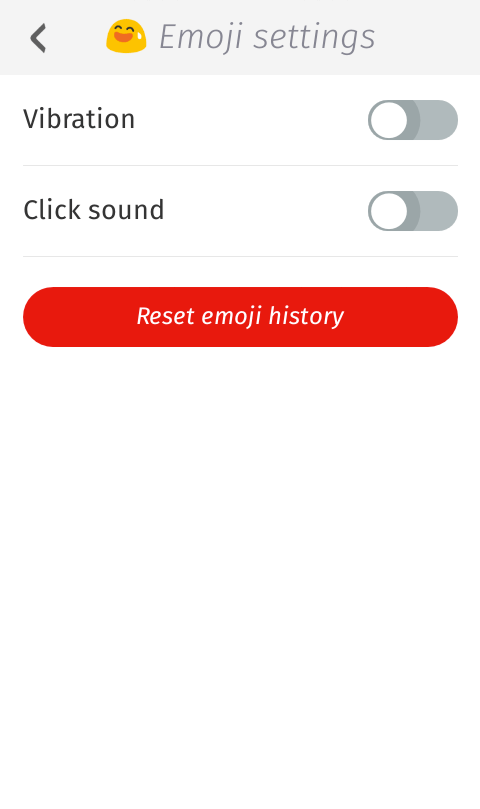

Get back your classic emoji keyboard ordered by category and including a history of the recent emojis you typed.
Like the vibration or the sound of typing? We've got you covered.
Screenshots
-
Example of layout.  -
Recent category filled with the latest emojis you typed.  -
Example of rendering in the message app.  -
Example of bubble when you type an emoji.  -
Settings page includes vibration and click sound, and allows you to clear the emoji history. 
Information
The emoji set embedded in Firefox OS (NotoColorEmoji) comes from Android KitKat and is incomplete. You might find that some emojis are missing (like the flags) and others are not colored but displayed as black shapes. The black shape emojis come from the fallback font AndroidEmoji that contains a bit more emoji symbols.
As long as Mozilla doesn't include a complete set of emoji symbols the keyboard won't be able to display them properly.
Found any bugs? Have any comments? Check out the github repository.